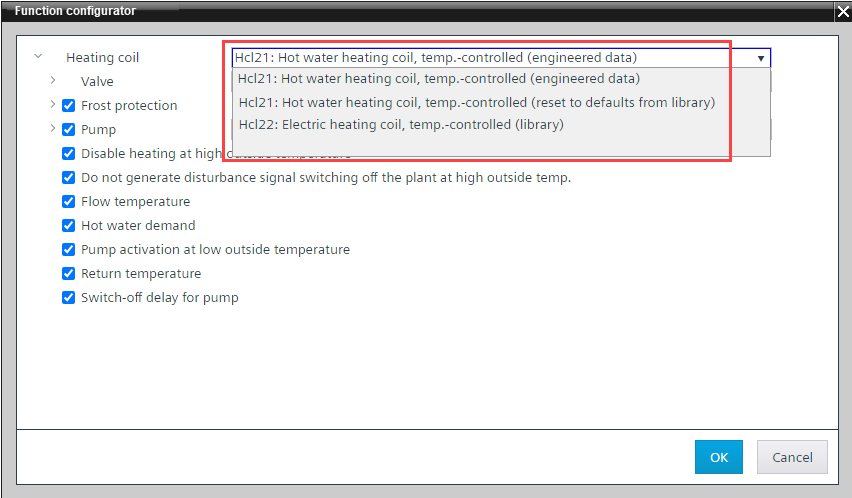

修改已配置的 HVAC 模块
使用函数配置器更改 HVAC 模块（始终基于库）可以包括以下选项：
- Update existing function with the transfer of the engineered parameters (as far as possible)
- Update existing function with default parameters
- Replace existing function with a new compatible function
1. Replace an existing HVAC module
- The selected plant is created with nested modules.
- Select the module to be changed.
- Right-click the module and select Function configurator. Alternatively, right-click the empty space in the chart and click Function configurator.
- The Function configurator dialog box opens.
- Open the module list box. The module name is displayed with (
engineered data).
This means, that the module has been adjusted and no longer matches the original module from the library. Therefore, deleted options cannot be reactivated. - Select the new required function:
- Module
(reset to defaults from library)(library) - the CFC block and BACnet value configuration will be reset and replaced with the defaults from the library. - Compatible module from the library (
library).
- Clear the unused function from the selected module.

Note: Assigned I/O data points are removed when a function is deselected. - Adapt the functionality according to the system specification.
- Click OK.
- The modules are replaced.
- The deselected options are removed.
- The chart connections are updated.

I /O 数据点必须根据新功能重新分配。
2. Reassign I/O data points
更换模块时，将从库中复制程序数据，并根据需要重新使用现有的 I/O 数据点。可以从库中复制其他 I/O 数据点，但应手动检查和完成它们。
- In the Project tree, go to the BACnet folder.
- Open the folder structure of the previous module that was replaced.
- Select the new module in the folder structure and verify the data points in the respective module in the Programming editor.
- Add missing I/O data points from the library to the control program as needed.
- Delete existing I/Os that are not required in the new program block.
- The hardware data are replaced.